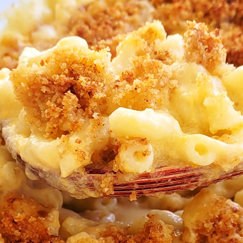

Mac and Cheese Recipe

Desciption:
A nice meal, serve with salad for something meatless.
Ingredients:
- 4 ounces elbow macaroni
- 2 tablespoons of butter
- 1 and 3/4 tablespoon of all-purpose flower
- 1 and a 1/2 cup of milk
- 1 cup of shreded sharp cheddar
- 1/4 a cup of grated parmesan
- 1 tablespoon of butter
- 1/4 cup bread crumbs
- 1/2 pinch of paprika
Directions:
- Preheat oven to 350 F (175 C).
- Cook macaroni to packkage directions, drain.
- Melt butter in a medium skillet over low heat. Gradually add flour, whisking until well combined. Slowly pour in milk, whisking constantly until smooth. Stir in cheeses, and cook over low heat until cheese is melted and the sauce is a little thick. Put macaroni in large casserole dish, and pour sauce over macaroni. Stir well.
- Melt butter in a skillet over medium heat. Add breadcrumbs and brown. Spread over the macaroni and cheese to cover. Sprinkle with a little paprika.
- Bake for 30 minues, serve.